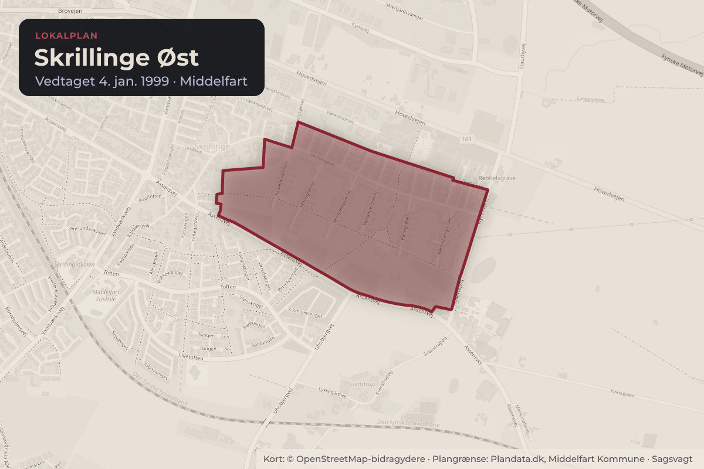
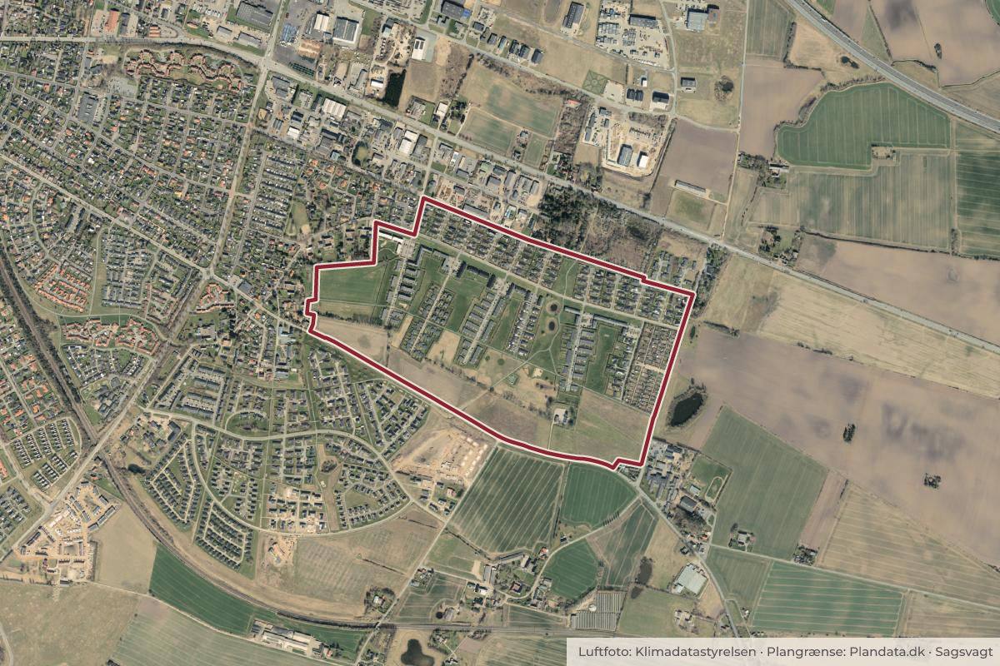

Besluttet 25. august, Økonomiudvalget, Middelfart
Igangsætning af lokalplanlægning for boligområde ved delområde V, Skrillinge

Kort: © OpenStreetMap-bidragydere. Plangrænse: Plandata.dk, Middelfart Kommune.

Kort fortalt
- Hvem
- Økonomiudvalget, Middelfart Kommune
- Hvornår
- Tirsdag 25. august 2026
- Status
- Besluttet. Godkendt. Præsentation Forvaltningen har på baggrund af rammelokalplan nr. 194 for boliger i Skrillinge modtaget en anmodning om igangsættelse af lokalplan for delområde V. Bygherre ønsker at udlægge området til boliger som tæt-lav bebyggelse. Visionen for projektet er at skabe rammer for en bred målgruppe, men med et særligt fokus på boliger, der er attraktive for seniorer, samt et større fælleshus med et bredt udvalg af funktioner.Beslutningen er forkortet her. Læs hele beslutningen
Er noget forkert her? Skriv til os
Læs hele sagen Kommunens egen tekst
Sagsfremstilling
Delområde V er udlagt som ramme i Lokalplan nr. 194 for boliger ved Skrillingegården,
Middelfart. Området udgør matr.nr. 3ii Skrillinge By Kauslunde. At delområdet er udlagt som
rammgivende betyder, at der er fastsat principper og overordnede bestemmelser for området,
som efterfølgende skal følges op med en byggeretsgivende lokalplan. Lokalplan 194 blev
vedtaget i maj 2022 med henblik på, at der skulle udarbejdes en byggeretsgivende lokalplan
for lokalplanens delområder I-V, når der forelå et konkret projekt i tråd med lokalplanens
retningslinjer og formål med området.
Lokalplankort fra lokalplan nr. 194.
Lokalplanens øvrige område er blevet bebygget med åben-lav boliger, mod syd, i
delområderne B1, B2 og B3, tæt-lav boligbebyggelsen i delområderne T1 og T2, og der er
igangsat lokalplanlægning for tæt-lav, åben-lav og etagebolig for delområde I-IV.
Området for Lokalplan nr. 194 er disponeret med en grøn kile, som går igennem hele området
og forbinder delområderne med stiforbindelser. Den grønne kile skal ligeledes indeholde
regnvandsbassiner, grøfter og lavninger til områdets fælles håndtering af hverdagsregn og
ekstremregn. Det er formålet med kilen at skabe varierede og sammenhængende grønne
fælles friarealer, hvor regnvandshåndteringen bliver en naturlig del af den rekreative oplevelse.
Lokalplan nr. 194 blev udarbejdet ud fra fire politiske pejlemærker: bæredygtighed,
mangfoldighed, fællesskab og kvalitet.
Det er væsentligt for planens udformning, at sikre en variation i boligtyperne og deres udtryk
inden for det enkelte delområde, samt delområderne imellem. Hvert delområde får således sin
egen identitet og genkendelighed i det store boligområde. Dette er i overensstemmelse med
formålet i lokalplan nr. 194.
Lokalplan for delområde V
Lokalplanområdet udgør ca. 2,3 ha. Bygherre ønsker at skabe et boligområde med mulighed
for ca. 65 antal tæt-lav boliger med fokus på fællesskab. Der vil som et centralt element
etableres et fælleshus. Fælleshuset skal fungere som samlingspunkt og understøtte
fællesskabet for hele det nye boligområde i Skrillinge. Boligerne vil være af en blanding af
etplans og toplans rækkehuse med egen for- og baghaver. Udendørsarealerne indrettes med
fokus på fællesskab og biodiversitet. Der ønskes et centralt fælles opholdsareal med aktiviteter
som eksempelvis væksthus, dyrkningsbede, grillfaciliteter og petanquebaner. Et
sammenhængende stinet forbinder områdets grønne kiler og skaber adgang til både fælles
opholdsarealer og mindre, mere private opholdszoner. Beplantningen skaber variation mellem
private og fælles rum og omfatter blandt andet frugttræer, sansehave og bærbuske.
Planområdet er vist med rød streg herover.
Visionen for området er at skabe et attraktivt boligområde for flere målgrupper med særligt
fokus på seniorvenlige boliger og fællesskabsorienterede rammer. Visionen understøtter
anbefaling 2 i seniorboligstrategien om at skabe flere seniorvenlige boliger, der også er
attraktive for andre målgrupper, ved at kombinere tilgængelige boliger og stærke fællesskaber
med en varieret beboersammensætning. Kommunens Seniorboligstrategien tillægges derfor
stor vægt i planlægningen af det nye boligområde, hvilket bl.a. understøttes af fællesfaciliteter
både inde og ude, tydelige grænser mellem private og fælles arealer, adgang til eget uderum,
velvalgte boligstørrelser samt et område med en klar identitet. Som en del af den tidlige proces
har der været afholdt et fællesmøde med repræsentanter fra udvikler, Ældrerådet og
kommunens planlægger, hvor projektet blev præsenteret og drøftet. Ældrerådet har i den
forbindelse udtrykt stor tilfredshed med projektet og fokusset på seniorboligstrategien.
Planområdet er omfattet af kommuneplanramme B.03.20, der muliggør anvendelse til
boligområde i form af åben-lav bebyggelse med en maksimal bebyggelsesprocent på 30 % for
den enkelte ejendom og en maksimal bebyggelsesprocent på 40 % for tæt-lav boligbebyggelse
samt daginstitutioner. Bebyggelsen må maksimalt etableres med 2 etager og med en maksimal
bygningshøjde på 8,5 m.
Økonomi
Ingen
Høring
På initiativ fra udvikler blev der i Januar måned afholdt et visionsmøde for senior boliger med
repræsentanter fra ældrerådet, udvikler og kommunen. Ældrerådet er positivt indstillet på
projektet og er glade for fokusset på seniorer og seniorboligstrategien i projektet.
Når der er udarbejdet forslag til lokalplan, vil det blive sendt i offentlig høring.
Klima & bæredygtighed
Middelfart Kommuneplan 2025 og Plan- og bæredygtighedsstrategien fokuserer på grønne
byrum, natur og rekreative områder samt øget biodiversitet, dette bl.a. gennem værktøjet
biofaktor. Der er fokus på at skabe biodiversitet i valg af plantearter, samt bruge
regnvandshåndteringen til at understøtte områdets naturværdi. Dette vil været et fokus både
inden for det enkelte delområde og i den samlede plan i sammenhæng med de øvrige områder
i Lokalplan nr. 194.
Bygherre ønsker at styrke social bæredygtighed i form af fællesaktiviteter med forskellige
temaer, som skal favne diversiteten samt skabe mødesteder og interaktion imellem
mennesker.
Udvikler arbejder desuden efter at opnå DGNB Guld for både rækkehusene og fælleshuset.
En lokalplan kan ikke fastsætte bestemmelser om certificering, men der skal med lokalplanen
gives mulighed for anvendelsen af bæredygtige materialer, således en certificering ikke
forhindres.
Behandlingsplan:
Økonomiudvalget den 25 august 2026
Beslutning
Godkendt.
Præsentation
Forvaltningen har på baggrund af rammelokalplan nr. 194 for boliger i Skrillinge modtaget en
anmodning om igangsættelse af lokalplan for delområde V.
Bygherre ønsker at udlægge området til boliger som tæt-lav bebyggelse. Visionen for projektet
er at skabe rammer for en bred målgruppe, men med et særligt fokus på boliger, der er
attraktive for seniorer, samt et større fælleshus med et bredt udvalg af funktioner. Udvalget
anmodes om, at træffe beslutning om, hvorvidt planlægningen skal igangsættes.
Forvaltningen indstiller
At der bliver udarbejdet lokalplan med en fremtidig anvendelse til boliger i form af tæt-lav
boligbebyggelse og et fælleshus for for hele det nye boligområde i Skrillinge,
at der bliver arbejdet videre med disponering af bebyggelsen, herunder
bebyggelsestætheden, naboskab og mødet med området uden for lokalplanen, og
at der bliver arbejdet videre med anvendelsen af fælleshuset.
Kilde: Middelfart Kommune, Økonomiudvalget, referat fra mødet tirsdag 25. august 2026, punkt 2. Læs den originale sag hos kommunen.